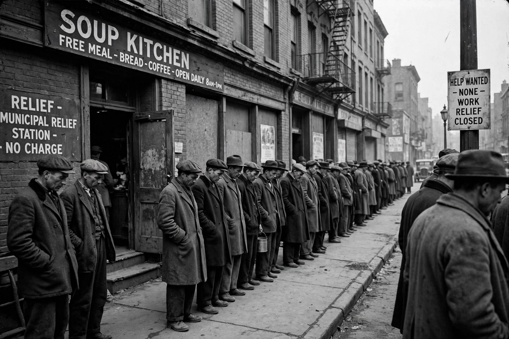

Great Depression

[Image: unemployed men queueing at a breadline during the Great Depression, black-and-white photograph]The Great Depression was the deepest and longest economic downturn of the industrial era, beginning with the US Wall Street crash of October 1929 and lasting through the 1930s. US real output fell by roughly a third, Unemployment reached about a quarter of the labour force in 1933, thousands of banks failed, and the slump spread worldwide through the gold standard, collapsing trade (down by some two-thirds in value) and debt deflation.
Causes and course
Explanations emphasise the Federal Reserve's monetary contraction and bank panics (Friedman and Schwartz), Irving Fisher's debt-deflation spiral, collapsing consumption and investment (the reading of John Maynard Keynes), and the deflationary straitjacket of the gold standard, which countries escaped at different times — Britain in 1931, the US in 1933 — recovering roughly in the order they left. The Dust Bowl compounded American misery.
Response and legacy
President Franklin D. Roosevelt's New Deal (from 1933) brought bank reform (deposit insurance, the SEC), relief and public works, Social Security (1935) and labour rights, though full recovery came only with Second World War mobilisation. The Depression transformed Macroeconomics — inspiring Keynes's General Theory (1936) — and durably expanded expectations of government: unemployment insurance, financial regulation and macroeconomic stabilisation all descend from it.